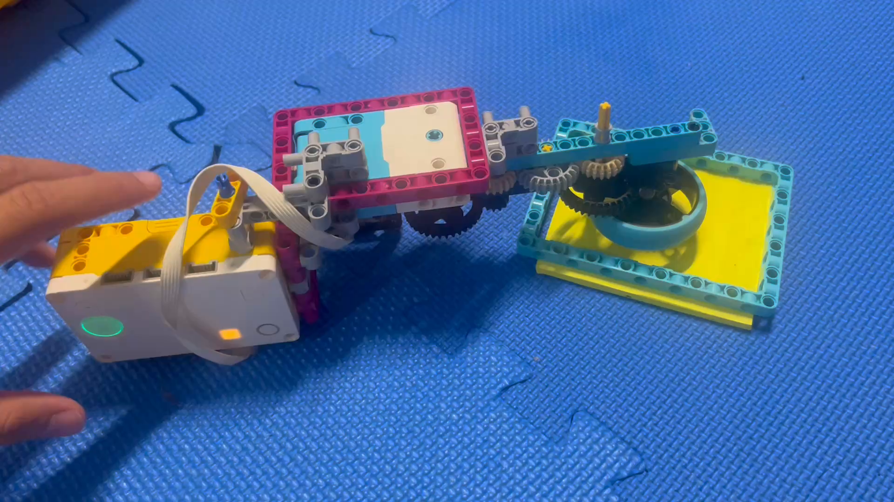

For this Spirograph project, I explored how changing the motion, spacing, and rotation of a drawing mechanism creates repeating geometric patterns. The goal was to test a design that could produce a clean, repeatable curve while also observing how small adjustments change the final figure.